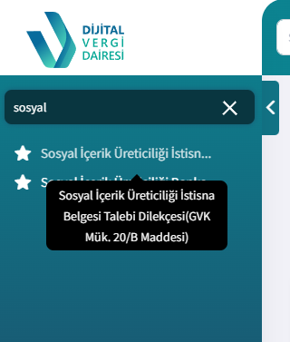
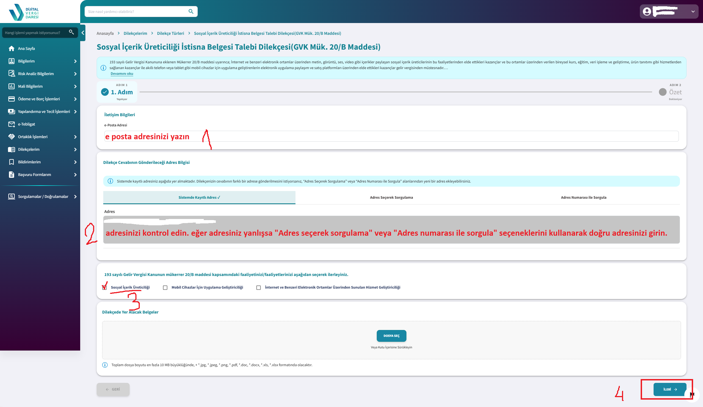
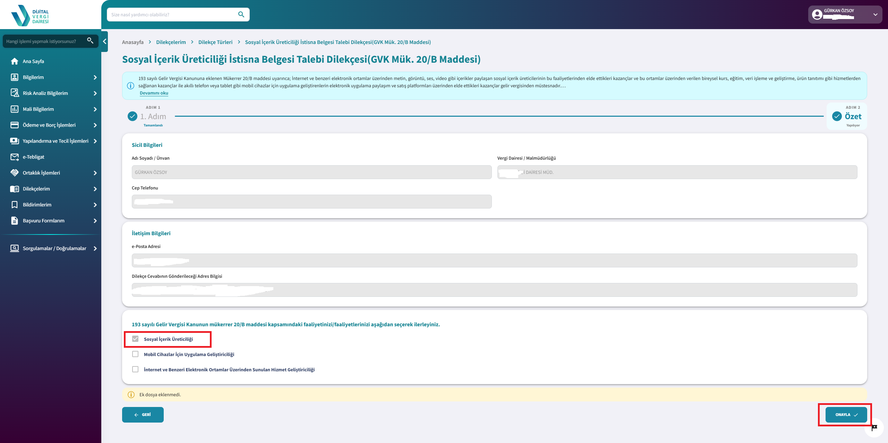
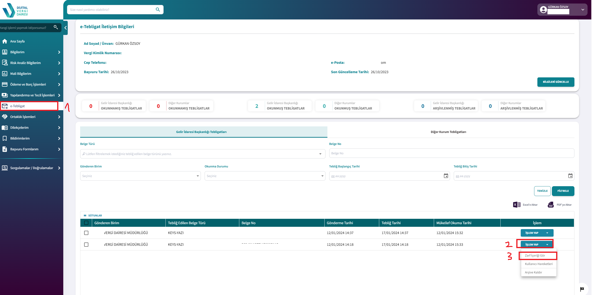
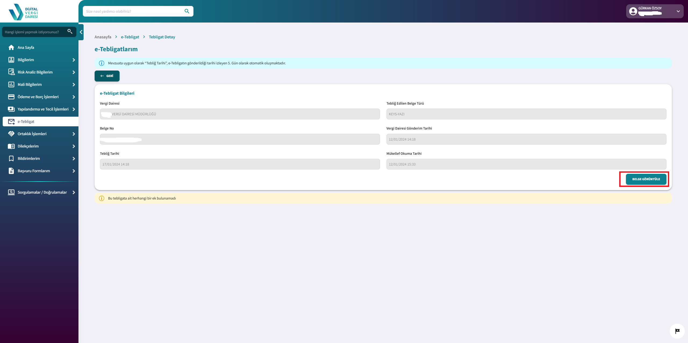
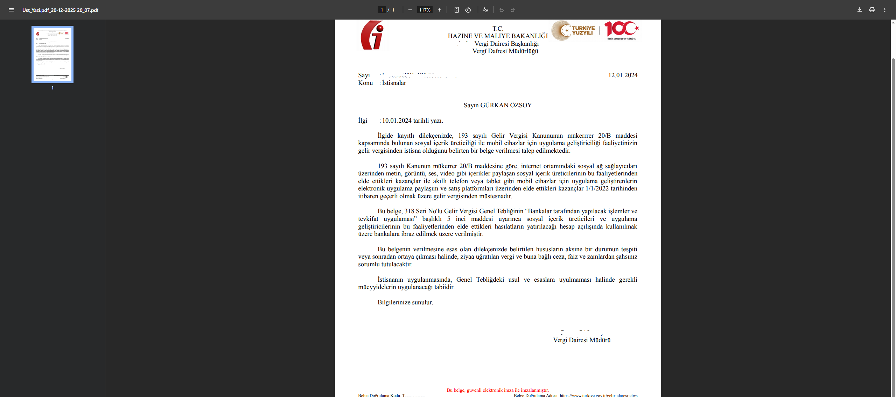
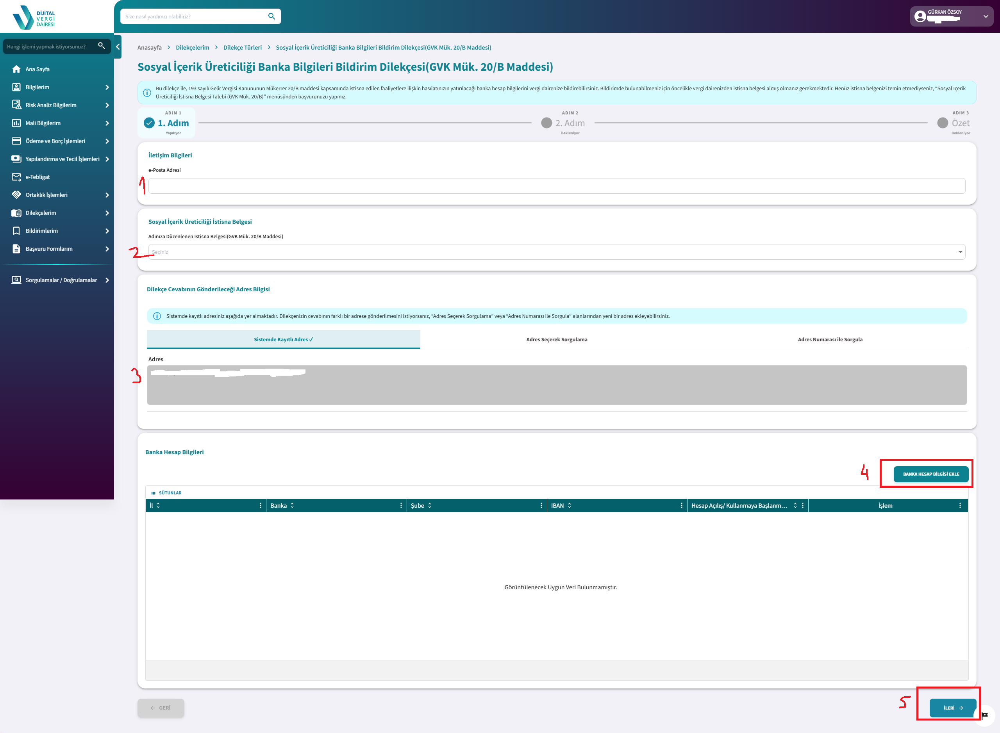

Sosyal medya istisna belgesi almak
Eğer sosyal medyadan para kazanacaksanız 20/B olarak nitelenen bir istisna belgesi almak zorundasınız. Bu belgeyle bankaya gidip hesap açarak, o hesaba gelen paradan her seferinde yüzde 15 vergi ödeyerek kazancınızı vergilendirirsiniz. Tabii bu arada isteğe bağlı 4B BağKur primlerinizi de ödemeniz gerektiğini belirteyim.
Gelelim detaylara. Aslında detayları daha önce bir X hesabı için anlatmıştım. Tekrar anlatayım.
turkiye.gov.tr üzerinden Dijital Vergi Dairesi'ne giriyorsunuz. Arama kutusuna "istisna" veya "sosyal" yazabilirsiniz. İlk çıkan linke tıklayın. Karşınıza şu ekran gelecek:

Devam edip ilgili alanları doldurun. Burada işaretlemeniz gereken seçenek Sosyal içerik üreticiliğidir. Tabii bunun yanında mobil uygulama geliştiriyorsanız o seçeneği de seçebilirsiniz. Son seçenek ise Frelancer'lar için. Yani internet üzerinden serbest çalışan kişiler için. Durumunuz hepsine uyuyorsa hepsini seçebilirsiniz:

İleri diyerek devam edin ve her şey doğruysa Onayla diyerek başvuru sürecini tamamlayın:

Artık 3-5 iş günü bekleyeceksiniz. Dilekçenize cevap gelince dijital Vergi Dairesi'ndeki e tebligat bölümüne düşecektir. Sırayla adımları takip edin:

Ve belgenizi görüntüleyin:

Belgeniz şöyle olacaktır:

Artık bu belgeyle bankaya gidip yeni bir vadesiz hesap açabilirsiniz. Hesabınız açtıktan sonra bu hesabı yine Dijital Vergi Dairesi'ne girip arama kısmına sosyal yazarak karşınıza çıkan ikinci linke tıklayarak bildirmeniz lazım:

Hayırlı uğurlu olsun. Artık bundan sonra hesabınıza para geldikçe yüzde 15 vergi kesilecek.
Videomu izleyip soru sormaktan çekinmeyin.